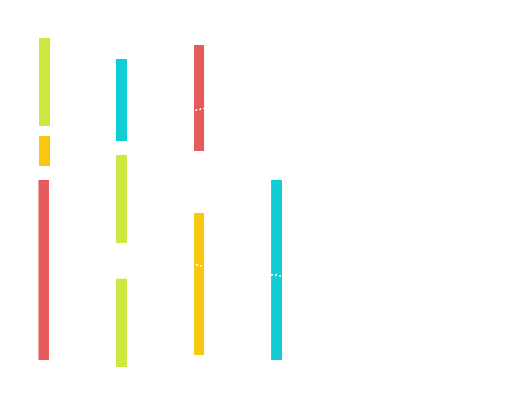
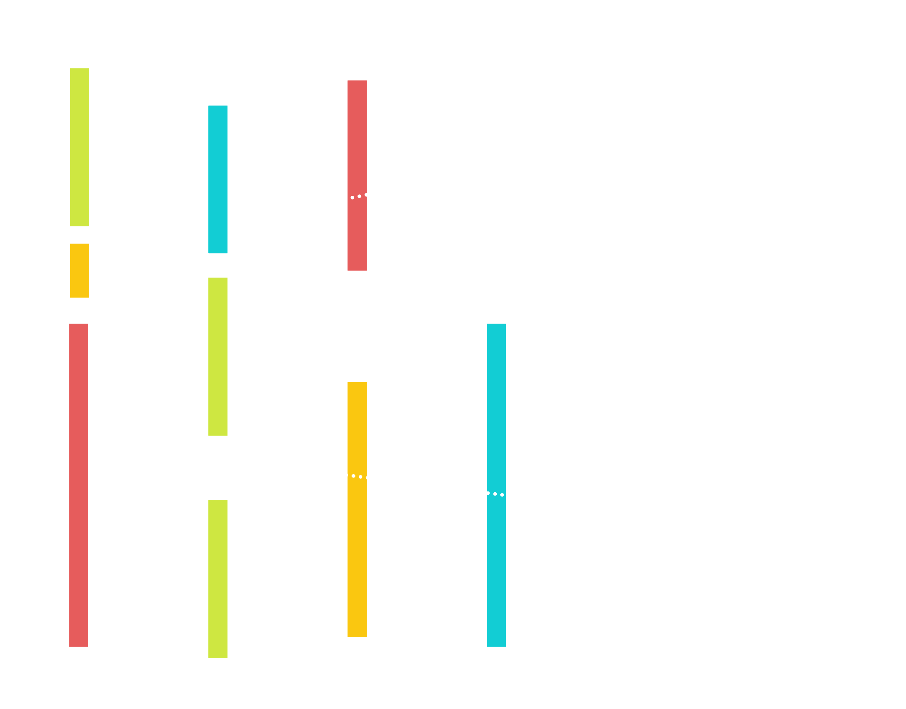
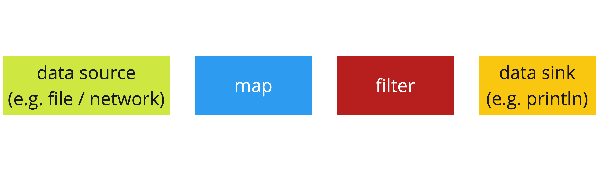
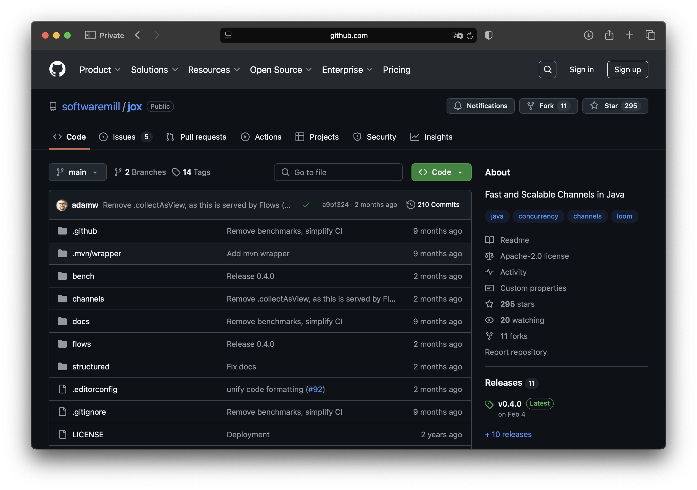
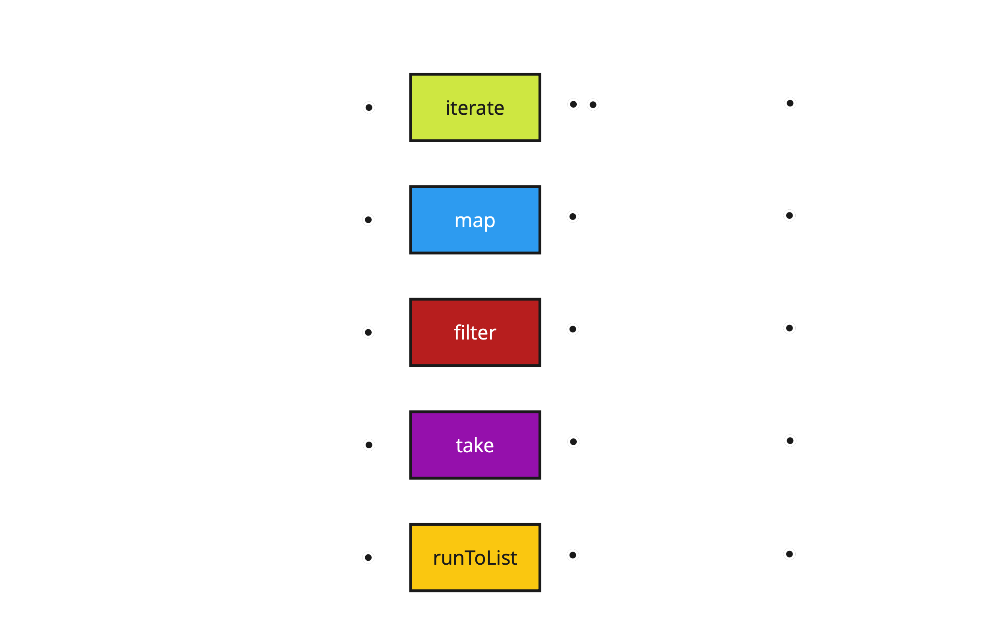
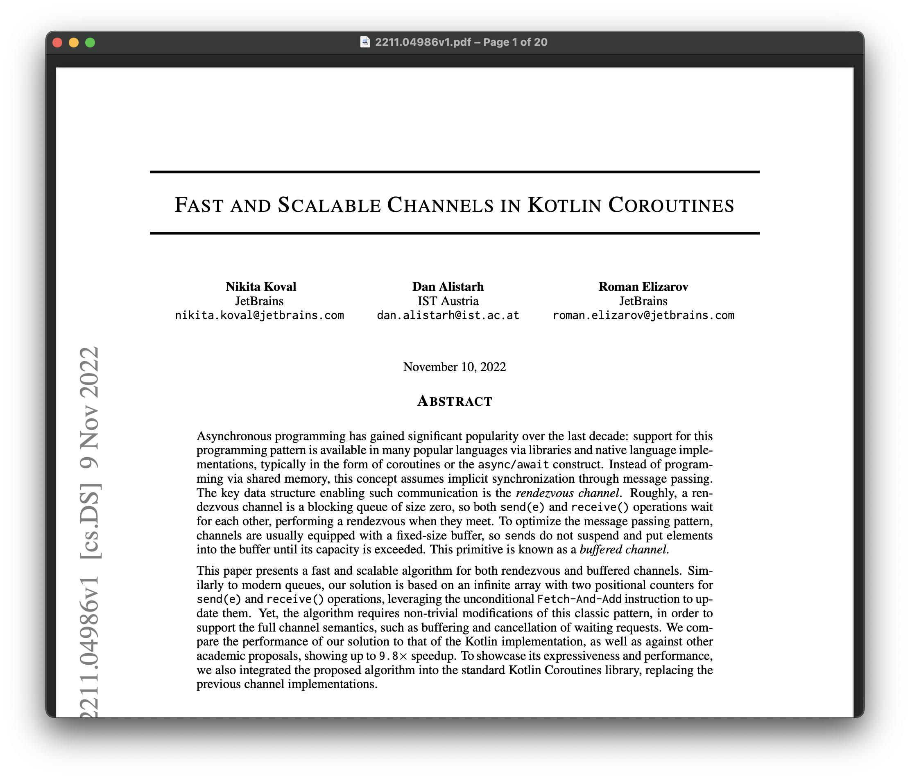
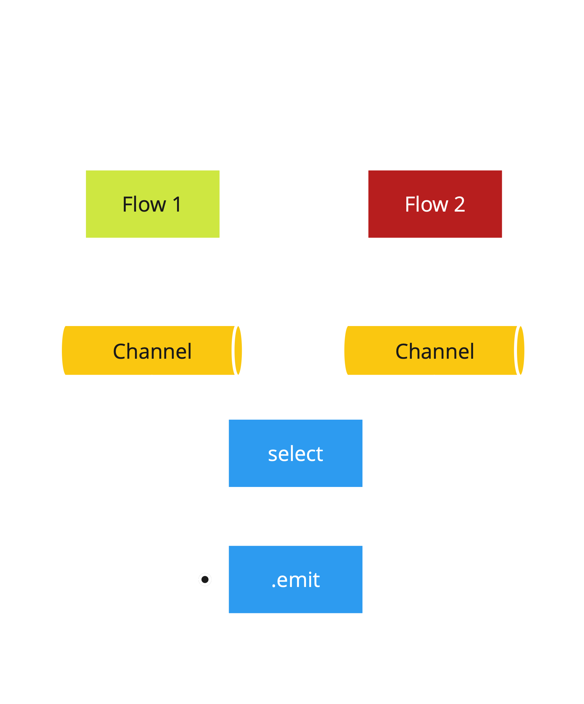
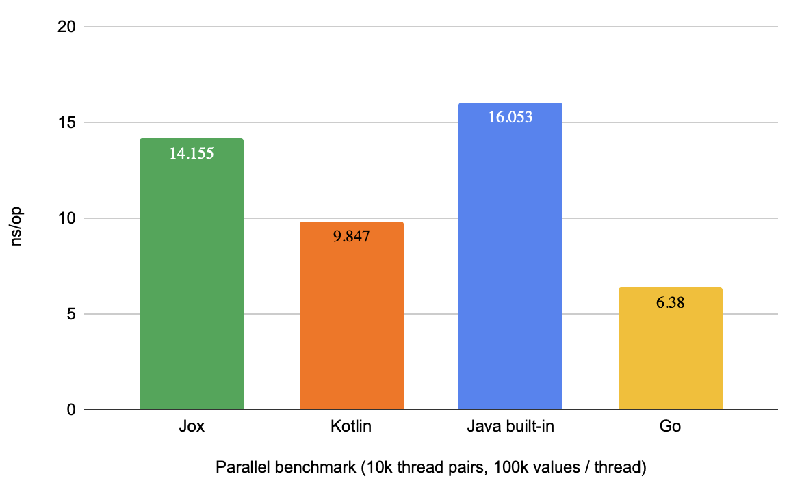
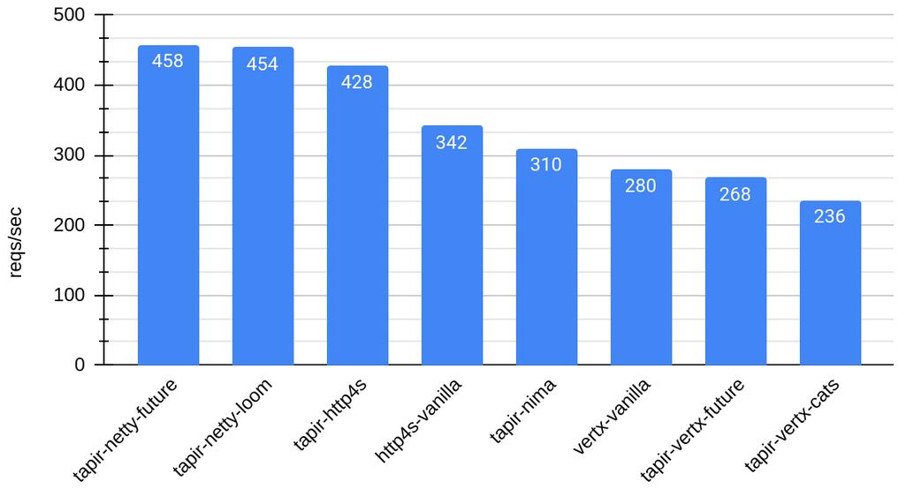

```text Loading ... ``` <!-- .element: style="text-align: center" --> --- ## Loom ∈ Java 21+ ```java [|2,6] timed(() -> { var threads = new Thread[10_000_000]; var results = ConcurrentHashMap.newKeySet(); for (int i=0; i<threads.length; i++) { threads[i] = Thread .ofVirtual() .start(() -> results.add(0)); } for (Thread thread : threads) { thread.join(); } return null; }); ``` <!-- .element: class="fragment" --> ``` ~2 seconds ``` <!-- .element: class="fragment" --> --- ## Akka streams ```java [|6|7|1-2,8-10|11|3-4,12|13|14] var delayed = CompletableFuture.delayedExecutor(5L, TimeUnit.SECONDS); var nats = Source.unfold(0, i -> Optional.of(Pair.create(i+1, i+1))); Source.range(1, 100) .throttle(1, Duration.ofSeconds(1)) .mapAsync(4, i -> CompletableFuture .supplyAsync(() -> i * 3, delayed) .thenApplyAsync(k -> k + 1)) .filter(i -> i % 2 == 0) .zip(nats) .runForeach(System.out::println, system) .toCompletableFuture(); ``` --- ## The problem Can we combine the developer experience: * of virtual threads * of "reactive" streaming libraries while keeping the performance? <!-- .element: style="color: #42AFFAFF;" class="fragment" --> --- ## From Reactive Streams to Virtual Threads <!-- .element: style="background: linear-gradient(to right, #66C4DD, #58BA47); -webkit-background-clip: text; color: transparent;" --> ### [Adam Warski](https://warski.org), [SoftwareMill](https://softwaremill.com) Tokyo, April 2025 --- ## Who am I? * co-founder of [SoftwareMill](https://softwaremill.com), R&D * software engineer: distributed systems, functional programming * [blogger](https://warski.org/articles/) * technologies: Java, Scala, Kafka, messaging, event sourcing * [OSS](https://warski.org/projects/): sttp client, Tapir, Hibernate Envers, Jox & more --- <h2 class="r-fit-text">Part I: Virtual Threads</h2> <!-- .element: style="background: linear-gradient(to right, #66C4DD, #58BA47); -webkit-background-clip: text; color: transparent;" --> --- ## Some history * part of Project Loom * 2017: start * 2023: stable release in Java 21 (LTS) * 2025: final restrictions lifted in Java 24 --- > Virtual threads are lightweight threads that reduce the effort of writing, maintaining, and debugging high-throughput concurrent applications. from [Oracle's website](https://docs.oracle.com/en/java/javase/21/core/virtual-threads.html) --- ## But why? * "traditional" threads are "heavy" * Java used to have a synchronous model * but, the web happened --- ## Before Loom: Scaling threads Core idea: make sure threads are never idle <div class="fragment"> * thread pools * `Executor` * `Future`, `CompletableFuture` </div> --- ## In the old days ```java var person = db.findById(id); if (person.hasLicense()) { bankingService.transferFunds(person, dealership, amount); dealerService.reserveCar(person); } ``` --- ## More recently ```java db.findById(id).thenCompose(person -> { if (person.hasLicense()) { return bankingService .transferFunds(person, dealership, amount) .thenCompose(transferResult -> dealerService.reserveCar(person)); } else { return CompletableFuture.completedFuture(null); } }); ``` technical concerns > code readability <!-- .element: class="fragment" --> --- ## Goals of Virtual Threads * maintain thread utilization * retain simplicity of synchronous code --- ## Goals of Virtual Threads * reintroduce **direct syntax** * eliminate **virality** * eliminate **lost context** --- #### Under the covers: Futures <p></p> --- <!-- .element: data-transition="none" --> #### Under the covers: Virtual Threads <p></p> --- ## In the new days ```java var person = db.findById(id); if (person.hasLicense()) { bankingService.transferFunds(person, dealership, amount); dealerService.reserveCar(person); } ``` --- ## Loom contributions * runtime: scheduler * API: virtual & platform threads * retrofitting blocking APIs Blocking is once again completely fine! <!-- .element: style="color: #42AFFAFF;" class="fragment" --> --- <h2 class="r-fit-text">Part II: Reactive Streams</h2> <!-- .element: style="background: linear-gradient(to right, #66C4DD, #58BA47); -webkit-background-clip: text; color: transparent;" --> --- ## Reactive Streams > govern the exchange of stream data across an asynchronous boundary > provide a standard for asynchronous stream processing with non-blocking back pressure from [reactive-streams.org](https://www.reactive-streams.org) --- ## Reactive Streams Process streaming data: * efficiently utilize threads * declarative concurrency * interface with I/O operations * safely handle errors --- ## Reactive Streams: bounded memory <p></p> --- ## Akka/Pekko streams ```java var delayed = CompletableFuture.delayedExecutor(5L, TimeUnit.SECONDS); var nats = Source.unfold(0, i -> Optional.of(Pair.create(i+1, i+1))); Source.range(1, 100) .throttle(1, Duration.ofSeconds(1)) .mapAsync(4, i -> CompletableFuture .supplyAsync(() -> i * 3, delayed) .thenApplyAsync(k -> k + 1)) .filter(i -> i % 2 == 0) .zip(nats) .runForeach(System.out::println, system) .toCompletableFuture(); ``` --- ## How did we get here? * working with `Future`s is complex * high-level, FP-inspired API is better --- ## Reactive Streams & implementations * `Publisher` / `Subscriber`: standard * Akka/Pekko Streams, Vert.X, Helidon, RxJava, Reactor: implementations --- ## But ... * `Future`s are viral * "lifted" syntax: overhead * lost context in case of errors --- <h2 class="r-fit-text" style="background: linear-gradient(to right, #66C4DD, #58BA47); -webkit-background-clip: text; color: transparent;">Part III: Implementing simple streams</h2> --- We'll take inspiration from: <img src="img/gopher.png" style="height: 100px;"> --- ## Jox: Channels & Flows <p></p> --- ## Assumptions * built-in control flow * `for`, `if`, `while`, `try-catch-finally` * composing operations using `;` * not `.thenCompose` --- ## Stages & emits ```java public interface FlowStage<T> { void run(FlowEmit<T> emit) throws Exception; } public interface FlowEmit<T> { void apply(T t) throws Exception; } ``` --- ## Top-level flow ```java public class Flow<T> { final FlowStage<T> last; // ... } ``` --- ## Example infinite stream ```java[|2-3|5|6-10] public class Flows { public static <T> Flow<T> iterate(T zero, Function<T, T> nextFn) { return new Flow(emit -> { T current = zero; while (true) { emit.apply(current); current = nextFn.apply(current); } }); } } ``` --- ## Example consumer ```java public class Flow<T> { // ... public List<T> runToList() throws Exception { List<T> result = new ArrayList<>(); last.run(result::add); return result; } } ``` --- ## Example transformation ```java[|7|8|9] public class Flow<T> { // ... public <U> Flow<U> map( ThrowingFunction<T, U> mappingFunction) { return new Flow<>(emit -> { last.run(t -> emit.apply(mappingFunction.apply(t))); }); } } ``` --- ## Single-thread pipeline ```java List<Integer> result = Flows .iterate(1, i -> i + 1) .map(i -> i*2) .filter(i -> i%3 == 2) .take(10) .runToList(); ``` --- <p></p> --- ## Java Streams? ```java List<Integer> result = Stream .iterate(1, i -> i + 1) .map(i -> i * 2) .filter(i -> i % 3 == 2) .limit(10) .collect(Collectors.toList()); ``` --- <h2 class="r-fit-text" style="background: linear-gradient(to right, #66C4DD, #58BA47); -webkit-background-clip: text; color: transparent;">Part IV: Asynchronous Infrastructure</h2> --- ## Communicating threads * queues? * channels! --- ## Channels * queue interface * completable * Go-like select --- <a href="https://arxiv.org/pdf/2211.04986"><p></p></a> --- ```java var ch = new Channel<Integer>(4); ch.send(1); ch.send(2); System.out.println(ch.receive()); ``` --- ```java [|8] var ch1 = new Channel<String>(); var ch2 = new Channel<String>(); Thread.ofVirtual().start(() -> { ch1.send("v1"); }); Thread.ofVirtual().start(() -> { ch2.send("v2"); }); System.out.println( select(ch1.receiveClause(), ch2.receiveClause()) ); ``` --- ```java var ch = new Channel<String>(4); ch.send("hello"); ch.done(); System.out.println("Received: " + ch.receiveOrClosed()); System.out.println("Received: " + ch.receiveOrClosed()); ``` ```text Received: hello Received: ChannelDone[] ``` <!-- .element: class="fragment" --> --- ## Managing threads * using structured concurrency * built on top of [JEP-499](https://openjdk.org/jeps/499) * in preview --- ```java[|1|3,8|13] var result = supervised(scope -> { var f1 = scope.fork(() -> { Thread.sleep(500); return 5; }); var f2 = scope.fork(() -> { Thread.sleep(1000); return 6; }); return f1.join() + f2.join(); }); ``` --- ```java[|5|14] var result = supervised(scope -> { var f1 = scope.fork(() -> { Thread.sleep(500); throw new RuntimeException("Giving up!"); }); var f2 = scope.fork(() -> { Thread.sleep(1000); return 6; }); return f1.join() + f2.join(); }); ``` --- ## Let it crash! --- ```java[|6,14] var result = supervised(scope -> { var result = new CompletableFuture<String>(); var f1 = scope.fork(() -> { Thread.sleep(500); result.complete("Number 1 won!"); }); var f2 = scope.fork(() -> { Thread.sleep(1000); result.complete("Number 2 won!"); }); return result.get(); }); ``` --- ## Structured concurrency Syntactical structure of the code determines the lifetime of threads Threading becomes an implementation detail! <!-- .element: class="fragment" --> --- <h2 class="r-fit-text" style="background: linear-gradient(to right, #66C4DD, #58BA47); -webkit-background-clip: text; color: transparent;">Part V: Asynchronous Streams</h2> --- ```java public Flow<T> merge(Flow<T> other) { return new Flow<>(emit -> { supervised(scope -> { Channel<T> c1 = this.runToChannel(scope); Channel<T> c2 = other.runToChannel(scope); boolean continueLoop = true; while (continueLoop) { switch (selectOrClosed(c1.receiveClause(), c2.receiveClause())) { case ChannelDone _ -> continueLoop = false; case ChannelError e -> throw e.toException(); case Object r -> emit.apply((T) r); } }); }); } } ``` --- <p></p> --- ```java [2|3|4-5|9-10|13] public Flow<T> merge(Flow<T> other) { return new Flow<>(emit -> { supervised(scope -> { Channel<T> c1 = this.runToChannel(scope); Channel<T> c2 = other.runToChannel(scope); boolean continueLoop = true; while (continueLoop) { switch (selectOrClosed(c1.receiveClause(), c2.receiveClause())) { case ChannelDone _ -> continueLoop = false; case ChannelError e -> throw e.toException(); case Object r -> emit.apply((T) r); } }); }); } } ``` --- ## Other operators * `mapPar` * `zip` * `buffer` * `grouped` * ... --- ## Akka streams ```java var delayed = CompletableFuture.delayedExecutor(5L, TimeUnit.SECONDS); var nats = Source.unfold(0, i -> Optional.of(Pair.create(i+1, i+1))); Source.range(1, 100) .throttle(1, Duration.ofSeconds(1)) .mapAsync(4, i -> CompletableFuture .supplyAsync(() -> i * 3, delayed) .thenApplyAsync(k -> k + 1)) .filter(i -> i % 2 == 0) .zip(nats) .runForeach(System.out::println, system) .toCompletableFuture(); ``` --- ## Jox Flows ```java [|4|6|7-9|1-2,12|13] var nats = Flows.unfold(0, i -> Optional.of(Map.entry(i+1, i+1))); Flows.range(1, 100, 1) .throttle(1, Duration.ofSeconds(1)) .mapPar(4, i -> { Thread.sleep(5000); var j = i*3; return j+1; }) .filter(i -> i % 2 == 0) .zip(nats) .runForeach(System.out::println); ``` --- ## Backpressure? * limited buffers * thread blocking --- ## Error handling? * sync: just throw exceptions * `try-catch-finally` * `.onError`, `.onComplete` for convenience * async: structured concurrency <!-- .element: class="fragment" --> * threading == implementation detail --- ```java [|2,5|4,7-9] public void runToChannel(UnsupervisedScope scope) { var channel = Channel.newBufferedChannel(bufferCapacity); scope.forkUnsupervised(() -> { try { last.run(channel::send); channel.done(); } catch (Throwable e) { channel.error(e); } return null; }); } ``` --- ```java [4-5,9-10,13|3,12] public Flow<T> merge(Flow<T> other) { return new Flow<>(emit -> { supervised(scope -> { Channel<T> c1 = this.runToChannel(scope); Channel<T> c2 = other.runToChannel(scope); boolean continueLoop = true; while (continueLoop) { switch (selectOrClosed(c1.receiveClause(), c2.receiveClause())) { case ChannelDone _ -> continueLoop = false; case ChannelError e -> throw e.toException(); case Object r -> emit.apply((T) r); } }); }); } } ``` --- ## Performance? --- <p></p> --- <p></p> --- ## Java Streams? <table style="font-size: 28px;"> <thead> <tr> <th></th> <th>java streams</th> <th>jox flows</th> </tr> </thead> <tbody> <tr style="background-color: #333333;"> <th>model</th> <td>pull<br />iterator</td> <td>push<br />observer</td> </tr> <tr> <th>extensibility</th> <td>gatherers</td> <td>custom <code>FlowStage</code></td> </tr> <tr style="background-color: #333333;"> <th>purpose</th> <td>collections<br />for-each</td> <td>asynchronous<br />event-driven/RT</td> </tr> <tr> <th>data</th> <td>bounded</td> <td>infinite</td> </tr> </tbody> </table> Both: lazy, backpressured --- <h2 class="r-fit-text" style="background: linear-gradient(to right, #66C4DD, #58BA47); -webkit-background-clip: text; color: transparent;">Part VI: In Summary</h2> --- ## Virtual Threads * since Java 21 * direct syntax: again * keeping the performance --- ## Structured Concurrency * code structure -> lifetime of threads * no "thread leaks" * threading: an implementation detail --- ## Jox Flows * powerful, familiar API * Java's control flow * no `Future` virality * lazy evaluation model * sync & async --- ## Reactive Streams * interoperability! * but: programmer-friendly APIs also possible on top of VTs * RS-based libraries: still have an edge * maturity * integrations --- ### Virtual Threads: the ultimate validation of Reactive Streams! --- ### Solving the hard problems that our clients face, using software <!-- .element: style="color: #42AFFAFF;" --> --- --- ## What's available now * Java 21 w/ virtual threads * [Jox](https://github.com/softwaremill/jox): channels, flows, concurrency scopes * Structured Concurrency, [JEP 499 (preview)](https://openjdk.org/jeps/499) ```java var starOnGitHub = true; ``` <!-- .element: style="text-align: center; font-size:40px;" --> --- ```java var thankYou = true; ``` <!-- .element: style="text-align: center; font-size:40px;" --> [https://warski.org](https://warski.org) <br /> [X: @adamwarski](https://x.com/adamwarski) | [BlueSky: warski.org](https://bsky.app/profile/warski.org) | [LinkedIn](https://www.linkedin.com/in/adamwarski/)